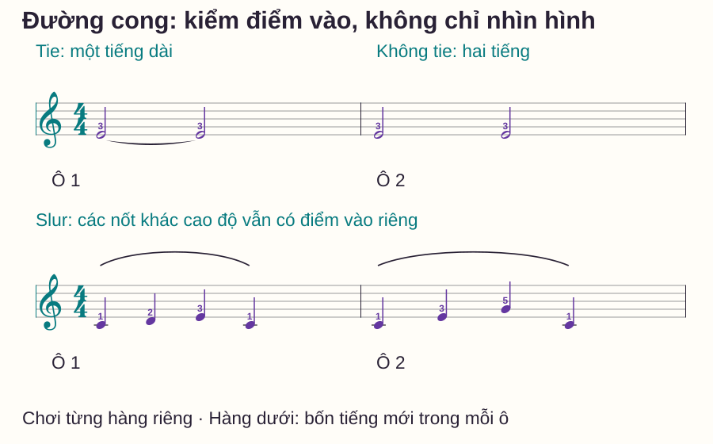
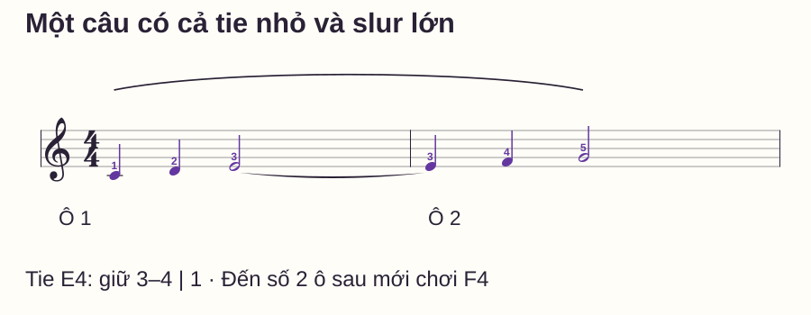
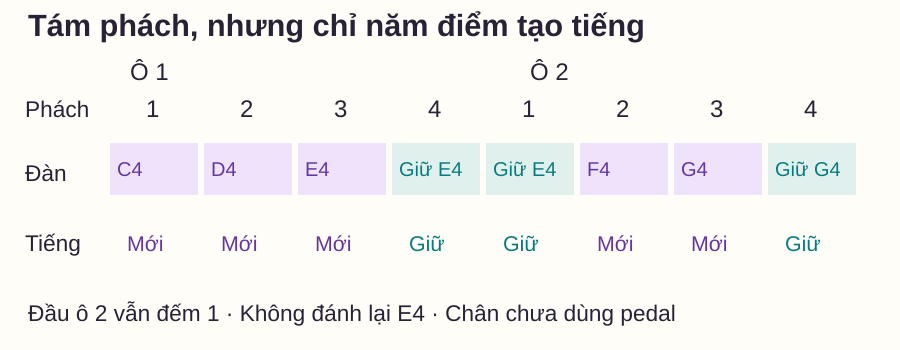

Nhịp và tiết tấu
Dấu nối và dấu luyến piano: khi nào cần đánh lại nốt?
# Dấu nối và dấu luyến piano: khi nào cần đánh lại nốt?
Hai đầu nốt có một đường cong ở giữa: bạn nên giữ nguyên tiếng, hay đánh nốt tiếp theo cho liền? Nếu chỉ nhớ “đường cong là chơi nối”, bạn có thể đánh thừa ở dấu nối hoặc bỏ mất nốt dưới dấu luyến.
Bài này dùng ba phép so: cùng nốt có/không có dấu nối, nhiều nốt dưới một dấu luyến và một câu có cả hai loại đường cong. Mục tiêu là đếm đúng điểm bắt đầu của âm trước khi bàn tới cách diễn đạt câu nhạc phức tạp hơn.
Trả lời nhanh
Dấu nối, hay tie, nối hai giá trị trường độ liên tiếp ở cùng cao độ thành một âm dài: đánh đầu nốt thứ nhất rồi giữ, không đánh lại ở đầu nốt thứ hai. Dấu luyến, hay slur, tổ chức cách nối tiếng hoặc nhóm nhạc; các cao độ khác nhau bên dưới vẫn có điểm bắt đầu riêng. Trong mẫu cơ bản của bài, ta chơi các nốt ấy liền tiếng bằng ngón, không dùng pedal. Muốn phân biệt, đọc đủ cao độ, các đầu nốt được đường cong nối tới và ngữ cảnh nhóm nhạc; đừng đoán chỉ từ độ cong hoặc vị trí trên/dưới khuông.
Dấu nối cộng thời gian của một cao độ
Open Music Theory — Rhythmic values giải thích tie kéo dài âm bằng cách nối các cao độ giống nhau liên tiếp. Trong 4/4, hai nốt trắng E4 được nối có tổng bốn phách, nhưng chỉ một lần E4 bắt đầu phát âm.
C4 là Đô giữa; E4 là Mi phía trên. Ngón phải 1–5 tương ứng C4–D4–E4–F4–G4 trong các mẫu này. Mỗi ô có bốn phách đen; nốt trắng dài hai phách, nốt tròn dài bốn phách.
| Cách viết | Điểm tạo tiếng E4 | Tổng thời gian |
|---|---|---|
| E4 trắng nối E4 trắng | Một lần ở phách 1 | Giữ qua 1–2–3–4 |
| E4 trắng rồi E4 trắng, không nối | Hai lần ở phách 1 và 3 | Mỗi tiếng hai phách |
Ở cách đầu, đầu nốt thứ hai vẫn có chức năng ghi thời gian. Nó không phải một lệnh bấm thêm và không phải nốt được bỏ khỏi cách đếm. Bạn tiếp tục đếm qua số 3 dù ngón không tạo tiếng mới.
Dấu luyến không xóa các điểm vào khác cao độ
LilyPond — Slurs vs. ties phân biệt tie kéo dài âm với slur chỉ cách kết nối/nhóm nốt; hai ký hiệu có thể cùng xuất hiện. Đường luyến dài trong nhạc piano cũng có thể chỉ nhóm câu. Cách diễn đạt cụ thể còn tùy tác phẩm; bài này chỉ dùng những nhóm ngắn, đọc rõ ràng để học nền.

Với C4–D4–E4–C4, mỗi nốt bắt đầu đúng một phách. Để tập liền tiếng trong vùng hẹp này, ngón giữ nốt hiện tại tới khi nốt kế bắt đầu rồi nhả; không cố giữ toàn bộ C–D–E thành một cụm ngân cùng nhau.
Ở cuối mỗi nhóm, vẫn tôn trọng trường độ của mẫu. Bài không thêm dấu nghỉ tại cuối đường luyến, không yêu cầu tạo khoảng nghỉ một phách hoặc tự rút nốt cuối còn nửa độ dài. Học cách nhả/cách câu tinh hơn cần xét chỉ dẫn và phong cách cụ thể.
Ba câu hỏi trước mỗi đường cong
- Các nốt được nối trực tiếp có cùng cao độ và liên tiếp trong bè đang đọc không?
- Đây là nối trường độ từng cặp hay một đường bao nhóm gồm nhiều nốt?
- Lịch điểm vào và thời gian giữ của từng âm là gì?
Đừng chỉ đếm số đường cong hoặc nhìn nó nằm trên hay dưới. Hai nốt cùng tên nhưng khác quãng tám không phải cùng cao độ. Ngược lại, một nhóm câu có thể chứa các nốt lặp, nên “nhìn thấy hai chữ E” không đủ để diễn giải mọi đường dài thành tie.
Trong hợp âm, một số âm có thể được nối còn âm khác phải đánh lại. Các ví dụ ở đây chỉ có một bè đơn âm để tránh trộn nhiệm vụ đó; không suy quy tắc “cả tay giữ” từ một dấu nối ở một âm.
Bài tập: nối E4 qua vạch mà vẫn đổi sang F4 đúng lúc
Mẫu mới có hai ô. Tay phải giữ vị trí C4–G4; chân không đạp pedal. Đường nối nhỏ từ E4 cuối ô 1 sang E4 đầu ô 2; đường luyến lớn bao cả câu. Hai đường có nhiệm vụ khác nhau.

Chưa chơi, hãy gõ hoặc chỉ những điểm có tiếng mới. C4 ở ô 1 số 1, D4 ở 2, E4 ở 3; qua ô 2 số 1 chỉ đếm, tới số 2 mới có F4, rồi G4 ở 3. G4 là nốt trắng nên giữ qua số 4.
Sau đó thử riêng E4 từ số 3 ô 1 tới F4 số 2 ô 2. Đếm “3–4 | 1–2”. Trong 3–4–1, ngón 3 phải giữ cùng phím E4; tại số 2, ngón 4 chơi F4 rồi ngón 3 nhả để chuyển liền tiếng. Không chờ sau số 1 rồi tự thêm một khoảng chuẩn bị F4.
Khi đã rõ đoạn giữ, nối lại từ C4. Nếu bạn quen vạch ô là bấm lại, hãy gõ phách bằng tay còn lại trong một lượt riêng rồi thử lại phần phải. Đếm có tiếng nói ở số 1 không đòi piano cũng tạo một tiếng mới tại đó.
Lưới tám phách: đếm không đồng nghĩa đánh

Tự kiểm trước khi xem lời giải
Trong câu hai ô: có mấy lần tạo tiếng mới? E4 được giữ mấy phách? Nếu bỏ riêng đường nối nhỏ nhưng giữ nguyên mọi đầu nốt và đường luyến lớn, đầu ô 2 phải làm gì?
Đáp án
Có năm điểm tạo tiếng: C4, D4, E4, F4, G4. E4 dài ba phách, từ số 3 ô 1 tới ngay trước số 2 ô 2. Nếu bỏ tie nhỏ, E4 đầu ô 2 trở thành điểm đánh mới; đường luyến lớn không biến hai E4 ấy thành một âm tự động. Cuối câu, G4 giữ tới số 1 tưởng tượng của ô 3 rồi nhả.
Để kiểm chuyển giao mà không chỉ nhớ câu trên, dùng một bài mới có trường độ và vùng âm tương đương, rồi xác định tie và lịch điểm vào trước khi nghe mẫu. Một lần làm đúng câu đã thuộc chưa cho biết bạn đọc được mọi cách lồng đường cong.
Những lỗi dễ gặp
| Lỗi | Điều cần phân biệt | Bài sửa nhỏ |
|---|---|---|
| Bấm E4 ở đầu ô 2 | Vạch ô với điểm vào mới | Đếm 3–4–1 trên một E4 duy nhất |
| Bỏ F4 vì cả câu có đường cong | Slur với tie | Chỉ lần lượt C D E F G rồi đặt lại đúng thời gian |
| Giữ C D E cùng lúc | Liền tiếng với chồng mọi nốt | Tập cặp C→D, nhả C sau khi D bắt đầu |
| Thêm phách nghỉ ở cuối luyến | Nhóm câu với dấu nghỉ | Đọc lại nốt cuối và điểm kết, chưa thêm khoảng trống |
| Ngừng đếm ở đầu nốt được nối | Không đánh mới bị hiểu là không có thời gian | Gõ phách riêng qua chỗ giữ rồi trở lại đàn |
Routine mười phút và khi nào mở rộng
- 0–2 phút: so hai E4 trắng có/không có tie và gọi số lần đánh.
- 2–4 phút: chơi riêng nhóm bốn nốt dưới slur, chưa pedal.
- 4–6 phút: tập E4 qua vạch với lời đếm 3–4–1–2.
- 6–8 phút: chơi hai ô đầy đủ, kiểm năm điểm tạo tiếng.
- 8–10 phút: tự trả lời biến thể bỏ tie, ghi một lỗi cần sửa.
Mở rộng khi bạn phân biệt được thời gian giữ với số lần tạo tiếng, đếm qua vạch không bấm lại E4 và vẫn chơi đủ F4/G4. Sau đó mới thử tie trong hợp âm hoặc một nhóm câu dài; không thêm nhiều bè và pedal cùng lúc.
Đọc thêm
Cách đếm nhịp piano giúp ôn trường độ. Một tay giữ, một tay di chuyển tập giữ âm khi nhiệm vụ khác đang diễn ra. Dấu thăng, giáng, bình giải thích lớp ký hiệu cao độ riêng.
Khi đã giữ đúng thời gian nhưng câu vẫn bị che, dùng bài cân bằng giai điệu và phần đệm để luyện quan hệ hai bè.
Câu hỏi thường gặp
Tie có thể nối hai nốt cùng tên nhưng khác quãng tám không?
Không, chúng không cùng cao độ. Cần đọc đủ vùng âm và xem chính xác các đầu nốt được đường nối gắn tới.
Hai nốt cùng cao độ có luôn phải nối không?
Không. Nếu không có tie, các đầu nốt có điểm bắt đầu riêng theo trường độ. Mẫu so sánh hai E4 trắng minh họa điều đó.
Slur có luôn nằm phía trên khuông còn tie ở dưới không?
Không dùng vị trí để xác định ý nghĩa. Cách đặt còn phụ thuộc hướng thân nốt, bè và bố cục; phải đọc mối quan hệ âm nhạc.
Có phải dùng pedal cho mọi dấu luyến?
Không. Bài này tập các nhóm ngắn bằng ngón và không pedal. Việc dùng pedal cần xét âm nhạc, không chỉ có hoặc không có đường cong.
Nốt được nối có làm tổng phách ô tăng lên không?
Không. Mỗi đầu nốt vẫn chiếm phần thời gian đã viết trong ô của nó. Tie chỉ cho biết đó là phần kéo dài của cùng âm, không phải âm mới.
Có cần nhấn nốt đầu mọi đường luyến không?
Không có quy tắc nhấn mạnh giống nhau cho mọi đường luyến. Bài chỉ học điểm vào/độ dài; sắc thái và cách câu phải xét tác phẩm cụ thể.
Nguồn và ghi chú biên soạn
- Open Music Theory — Rhythmic values: tie nối trường độ của cao độ giống nhau liên tiếp.
- LilyPond Learning Manual — Slurs vs. ties: phân biệt chức năng và khả năng cùng xuất hiện. Kiểm ngày 28/10/2026.
- Các mẫu, đường cong, lưới và phép tự kiểm tự biên soạn; chưa có giáo viên độc lập review hoặc thử nghiệm học viên. Không chép ví dụ nguồn hoặc coi mẫu cơ bản là mọi quy tắc diễn đạt câu nhạc.